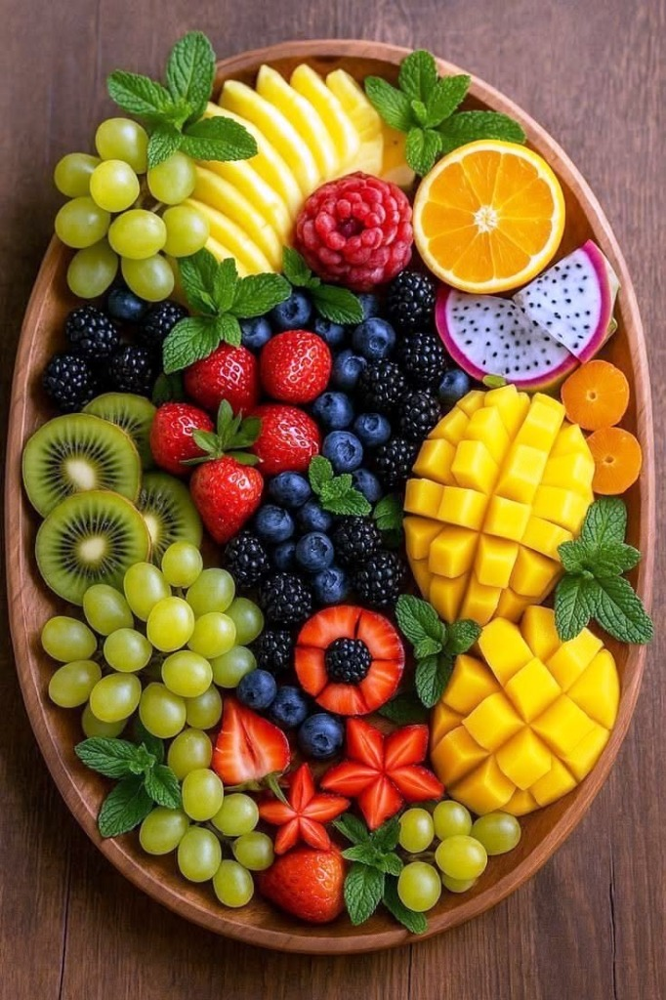
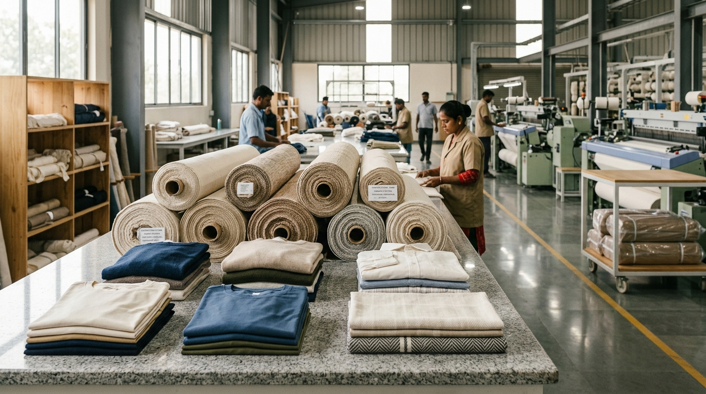

Pillar I
Quality Assured
Hand-inspected at farm-gate, verified in cleanrooms, and certified at deep-water seaports. Uncompromised prestige delivered to every continent.
We source, inspect, and deliver South India’s finest agricultural harvests, authentic spices, and commercial goods to 50+ global markets with precision, velocity, and uncompromised trust.
Tailored harvests and products sourced directly from verified regional terroirs.
IoT temperature-monitored refrigerated cargo and expedited multimodal freight.
Certified phytosanitary documentation, origin tracing, and zero-delay clearance.
Dedicated trade specialists standing with you from regional farm to discharge port.
We’re a passionate team of agricultural sourcing agronomists, quality auditors, and maritime trade coordinators dedicated to building transparent, sustainable export bridges that connect regional producers with high-demand international markets.
From fresh harvests to market-ready products, we connect trusted origins with diverse trade opportunities.



From trusted suppliers to global markets, we connect businesses across continents through reliable international trade and sourcing.
We envision a connected global trade network where the right products reach the right markets through trusted relationships and seamless movement.
“Let’s turn your next requirement into a seamless trade journey.”
The foundational principles that define our agrarian provenance, master maritime voyages, and sovereign standards across every shipment departing Indian shores.
Hand-inspected at farm-gate, verified in cleanrooms, and certified at deep-water seaports. Uncompromised prestige delivered to every continent.
Direct alliances with 500+ agrarian cooperatives. Sourced from the richest fertile soils, pure by nature, untainted by speculative middlemen.
Flawless cold-chain stewardship and dedicated deep-sea liner sailings, safeguarding cargo integrity across every nautical mile.
Expedited diplomatic clearance, customs mastery, and direct port gateways linking South India to 50+ sovereign markets.
Institutional-grade trade infrastructure engineered to remove operational bottlenecks, ensure compliance, and safeguard cargo value.
Long-term farm-level partnerships, transparent pricing indexes, and origin batch certification across 50+ sourcing locations in South India.
Export-grade packaging engineering: vacuum-sealed nitrogen flushed pouches, heavy-duty sea-freight master cartons, and aseptic drums.
Complete international trade documentation: Bills of Lading, Phytosanitary Certificates, Certificates of Origin, and APEDA compliance.
Multi-temperature controlled facilities from farm gate to seaport, refrigerated reefer containers, and real-time transit monitoring.